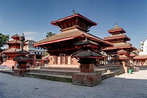

1 . Kathmandu Durbar Square
|  |
| district |
kathmandu |
| location |
basantapur, Kathmandu |
| date of established |
1069–1083 B.S. |
Kathmandu Durbar square also known as basantapur durbar kshetra is enlisted in the world heritage cultural site by UNESCO. It is one of the three durbar squares of the Kathmandu valley.The palaces within the durbar square represents the reign of different historical kings. Malla and Shah Kings ruled the kingdom of Kathmandu city from the palaces of Kathmandu durbar square.
The Durbar square is also popularly known as “Hanuman dhoka durbar square”, and it is so because of the statue of Hanuman (monkey god), the devotee of Lord Ram in the main entrance of the palace. It is also said that royal palace was originally at the Dattatreya square and it was later shifted to the Durbar square area.
The palace reflects the culture, tradition, and rituals of the legendary kings as well as the architectural framework of that period.
From the period of those legendary kings, within the durbar square premises, several monarch activities is performed which includes the coronation of the monarchial kings too. Similarly, the durbar or the palace is decorated with beautifully carved doors and windows that reflect the architectural talent of the people of those historical times.
Besides, king Tribhuvan memorial museum and king Mahendra memorial museum is also built within the palace. Several temples and statues of different gods and goddesses can be observed within the palace.